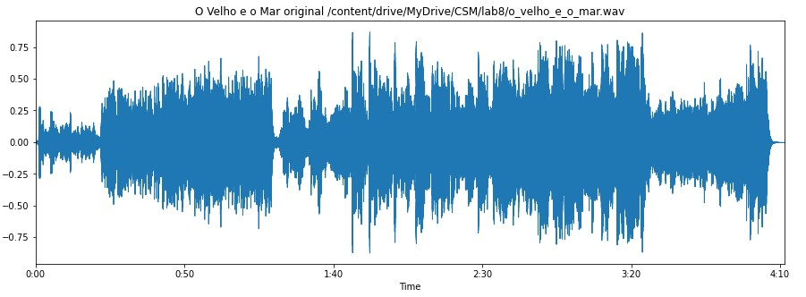
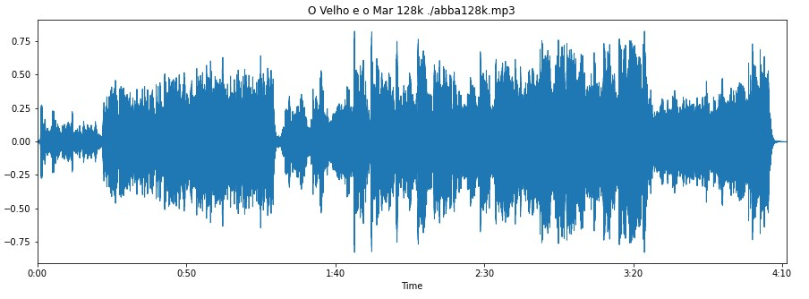
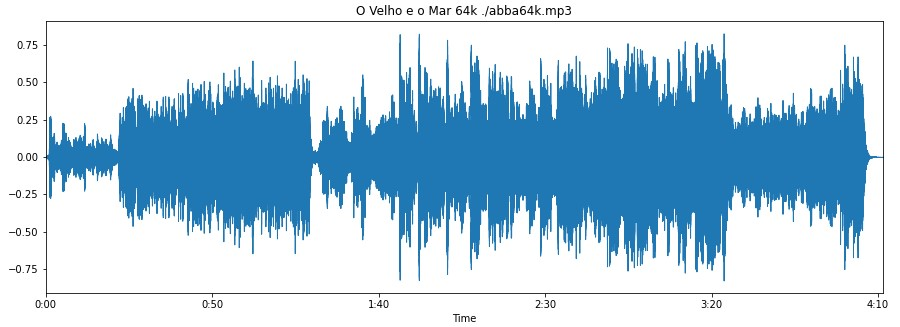
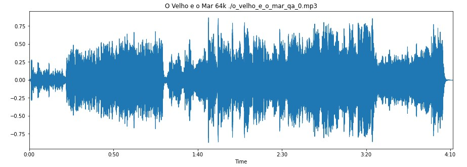
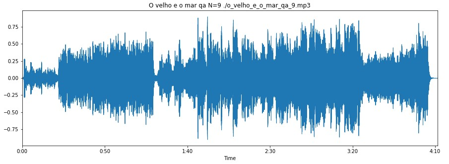

Áudio original (.wav)
A música analisada será "O Velho e o Mar" do artista brasileiro Rubel.

Conversão de wav para mp3, 128kbps, taxa fixa

Conversão de wav para mp3, 64kbps, taxa fixa

Conversão de wav para mp3, N=0, taxa variável

Conversão de wav para mp3, N=5, taxa variável
Conversão de wav para mp3, N=9, taxa variável
